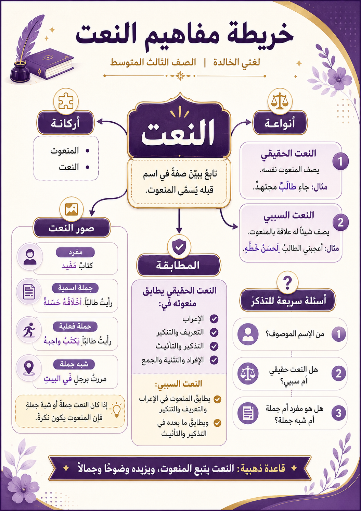

منصة آفاق التعليمية
خريطة مفاهيم النعت
ملخص بصري شامل لدرس النعت
راجعي درس النعت في خريطة واحدة ✨
التعريف، الأركان، الأنواع، صور النعت، المطابقة، وأهم القواعد.

العودة إلى ملف درس النعت
العودة إلى الدروس